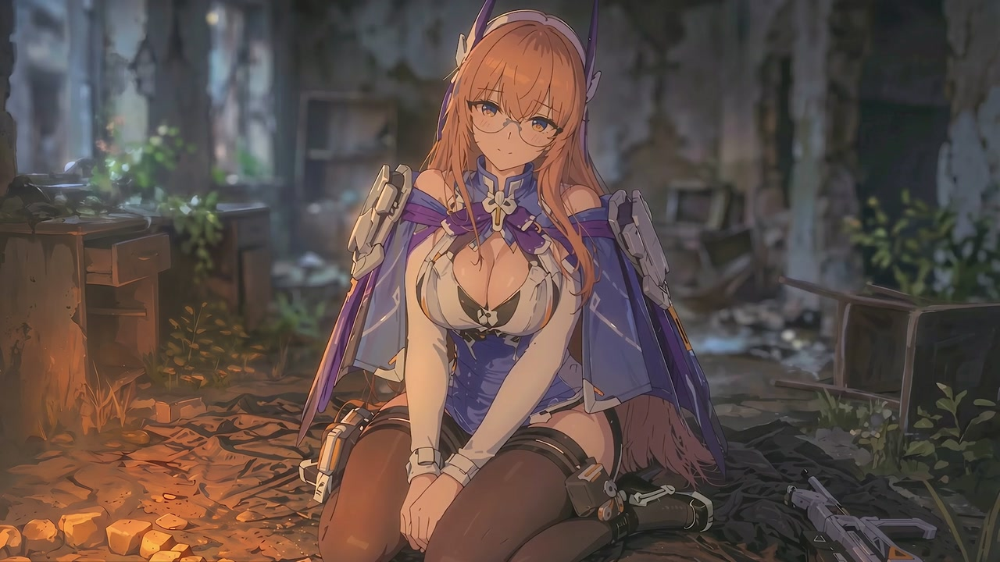
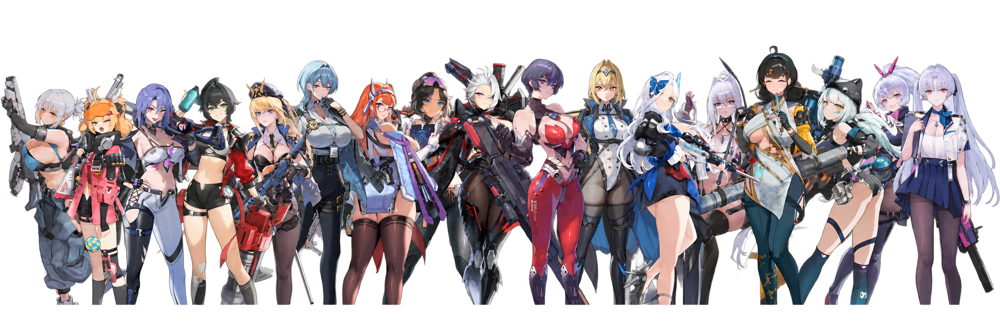

GPUN ORIGINAL / TERRARIUM
무너진 지상. 다시 이어질 우리의 세계.
나우와 모터에임, 그리고 가문의 이름으로. 지하 요새 테라리움에서 시작되는 새로운 이야기.
SYNCHRO UNLIMITEDNAU × MOTOR AIM

01 / THE WORLD
인류를 지키는 안드로이드들의 이야기
외계생명체 립터의 침략 이후, 인류는 지하 초대형 요새 테라리움으로 피신했습니다. 지상에서는 전투 안드로이드 나우(NAU)와 메카닉 병기 모터에임(MA)이 인간을 대신해 싸웁니다.
몰락한 가문의 가주가 되어, 가문의 부활과 나우의 해방, 그리고 세계의 숨겨진 진실을 향해 나아가세요.
SUBCULTURE · MECHANIC · THIRD-PERSON SHOOTING
02 / SCREEN SHOT